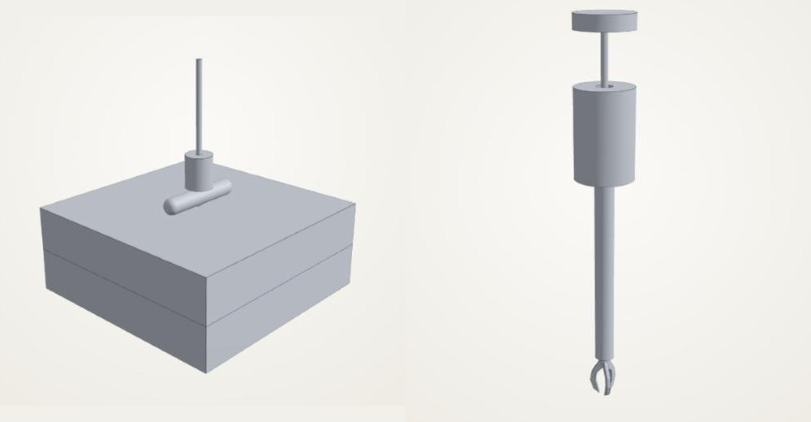
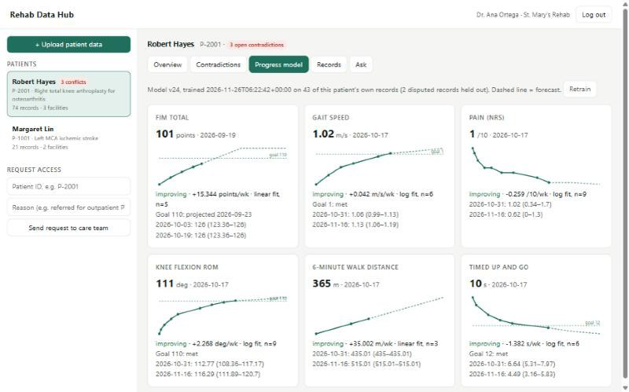

Capillary Flow Porometer
A bench instrument that measures the pore size of tissue samples by pushing air through them and tracking how flow responds to pressure.
↗ View projectI'm a student at Duke University studying Biomedical Engineering. I build where hardware, software and people meet: medical device prototypes, health software and robots that have to work for real users on a real budget.
Sheet 02 / 05 — Prototypes
Physical devices for the lab and the clinic, designed in CAD.
A bench instrument that measures the pore size of tissue samples by pushing air through them and tracking how flow responds to pressure.
↗ View project
With Duke MEDesign: two concepts for an affordable endoscopy anchor for low-resource health systems. You can rotate both models in 3D.
↗ View projectSheet 03 / 05 — Software builds
Tools for learning anatomy and for keeping patient data straight.

A full human body you can explore in a VR headset's browser, with 1,021 labeled structures, X-ray focus and point-to-identify.

A shared rehab record across hospitals that flags contradictions, trains a recovery model for each patient, and answers questions from that patient's records only.
↗ View projectSheet 04 / 05 — Robotics
Embedded devices and competition robots: sensors, motors, and code that has to work on the first try.

A portable pill station that reminds adults with ADHD to take their medication with lights, sound and an LCD, and logs each dose to a companion website.
↗ View project
2024–25, high school. Our first fully custom robot, with four-stage slides, a 360° claw and a worm-gear hang. I was Head of CAD.
↗ View project
2023–24, high school. A fast-cycling robot that set a temporary Florida state record of 267 points and reached the FIRST World Championship.
↗ View projectSheet 05 / 05 — Contact
I'm looking for research and internship opportunities in biomedical engineering. If you have a question or just want to say hi, my inbox is open.
Say hello →